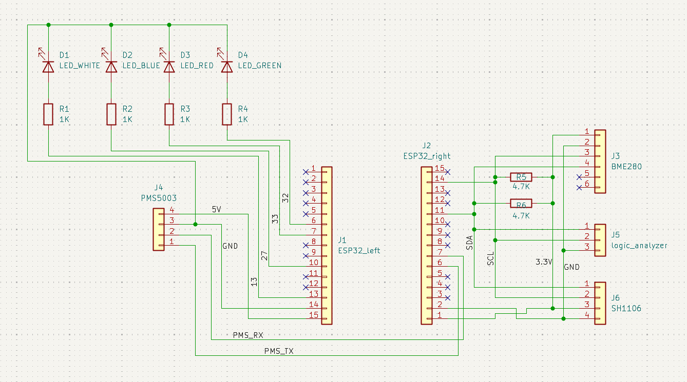

ESP32 weather station
I made a simple weather station a while ago and recently I decided to make it from scratch, Handmade Hero style.
Wiring it on breadboard was pretty simple. I learned some stuff about pull-up resistors and diodes.

Coding it was the hard part, since I wanted to make everything myself. The BME280 was a bit hard to setup, but getting the SH1106 to draw was the hardest part. So many small details (write A to B, then C to D, in that order, if you want to do X, but if you want to do Y do E to B first, then C to D, etc.). Thank god for Claude - made reading the datasheets so much easier. Here's an example of drawing a buffer to the OLED:
static inline SH1106FlushErrorCodes SH1106Flush(SH1106 *sh) {
// Each page is 8 rows tall, the SH1106 basically thinks in terms of display[8][128]
for (int page = 0; page < SH1106_HEIGHT / 8; ++page) {
u8 commands[] = {
// 0x00 indicates that the following are commands, not pixel data
0x00,
// 0xB0 = page 0, 0xB1 = page 1, ..., 0xB7 = page 7
(u8)(0xB0 | page),
// Column addres is split into two nibbles - high nibble command is 0x1X, and low nibble is 0x0X
// I want to write the whole buffer in one go, so I start at column 2 (because the internal RAM of
// the SH1106 is 132 clumns wide, so the 128 visible pixels start at column 2)
// low nibble:
0x02,
// high nibble:
0x10,
};
if (i2c_master_transmit(sh->handle, commands, sizeof(commands), pdMS_TO_TICKS(200)) != ESP_OK) return SH_COMMANDS_TRANSMIT_FAIL;
// +1 because of the control byte, 0x40
u8 data[SH1106_WIDTH + 1];
// Control byte, means everything the follows is pixel data
data[0] = 0x40;
// Each iteration builds the byte below
for (int x = 0; x < SH1106_WIDTH; ++x) {
// Represents all 8 vertical pixels in the current page at column x, start with all off
u8 byte = 0;
for (int bit = 0; bit < 8; ++bit) {
// Look the current pixel up - if it's on, set the corresponding bit in the byte
// page * 8 + bit = page * 8 gets me to the first row of this page and + bit moves down to
// the specific row within it. E.g. for page 2 and bit 3 the row is 19 (row = 2 * 8 + 3 = 19)
if (sh->screen[x][page * 8 + bit])
byte |= (1 << bit);
}
data[x + 1] = byte;
}
if (i2c_master_transmit(sh->handle, data, sizeof(data), pdMS_TO_TICKS(200)) != ESP_OK) return SH_SCREEN_TRANSMIT_FAIL;
}
return SH_OK;
}I'm pretty happy with how it turned out, but I haven't finished making it really robust (able to plug in and out boards while it's running without restarting) - I go more into that at the end of this article. I was also trying out new stuff - especially Raylib's way of naming things and header only libraries. Regarding Raylib's way of naming things, it looks nice (camelCase for variables, PascalCase for functions), but it gets a bit problematic (e.g. 0 followed by O, or acronyms: e.g. GetLEDGPIO). I think TigerStyle's way of naming things (quoted below) is much better, and I'll try it out in my next project. I also need to think a bit about how to use enums to return error codes - I feel like I was way too verbose with the naming.
Great names are the essence of great code, capturing what a thing is or does, for a crisp mental model.
- Append qualifiers to names
- Sort by most significant word (big endian naming)
- Use the same number of characters for related names (e.g. source/target) so they line up in the source.
- Use snake_case
- Don't abbreviate
I also wanted to try making some header only libraries (like stb), so I went with it for all the sensor stuff... But I don't really see the advantage/disadvantage to those? I mean, I suppose with .h/.c files I can make stuff "private" by just not exposing it in the API (in the .h file)? Also, a header file is easier to distribute than .h and .c, but that's a small difference. Maybe compile times? I think the project was too simple to see the difference. I was also the sole user, so it's not like I can notice how much easier it is to distribute.
After somewhat finishing it, I decided to make it more robust by moving the project onto a perfboard. Honestly, it was such a hassle - if I were to do it now, I'd just design and order a custom PCB. I think I could've positioned some components on the board better, and I'm also not that good with soldering, so the result looks a bit meh, but it works and is noticeably more structurally solid (e.g. I can spin it around by the PMS5003 while it works - no issues). At the end of the day, I don't think it matters much since I'll keep it in a 3D enclosure anyway (and if I wanted to make it look more professional, designing and ordering a PCB is the way to go anyway).
I was thorough with my soldering, checking each component’s connections with a multimeter after finishing work on it. It worked the first time, and the air quality in my room was awful after about two hours of soldering.
Unfortunately, I fried the BME280 while trying to make the station more robust (so that it can plug stuff in and out while it's running without any problems) - while testing changes to code, I mistakenly plugged the BME280 one pin off. I felt it getting really warm, and, by that time, it was already too late.
The end goal was to make some simple 3D enclosure for it (with some ample openings for airflow, of course), but now that it doesn't work it would be kinda pointless (can't showcase nor use it). I'll do that after I get another BME280 board - it's not exactly the cheapest weather sensor, but at this point I don't really care about rewriting the code, just want to get it to work.